Emotionally Mature Engagement
A static painting on the entrance back wall, behind the arrival position. Jane directs a video call toward Zephrine while Anna and Igor attend to their granddaughter on the screen. Jane remains behind the device, outside its view. This represents a calm, bounded way to maintain contact rather than asserting a complete reconciliation.
The built-in imagegen tool used private family references and A Fighter in Me as its style reference. The first composition placed Jane beside the child and was rejected because the camera could include her. The selected second composition moves Jane behind the device. The original photos and their metadata remain private.
The generated WebP is 1536 × 1024, 679,582 bytes, with no EXIF or XMP. The title is a physical plaque outside the painted pixels. No memory-frame assignment changes. Hashes and verification; initial and final edit prompts.
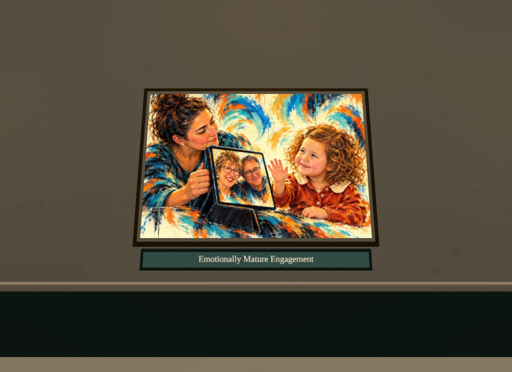
normal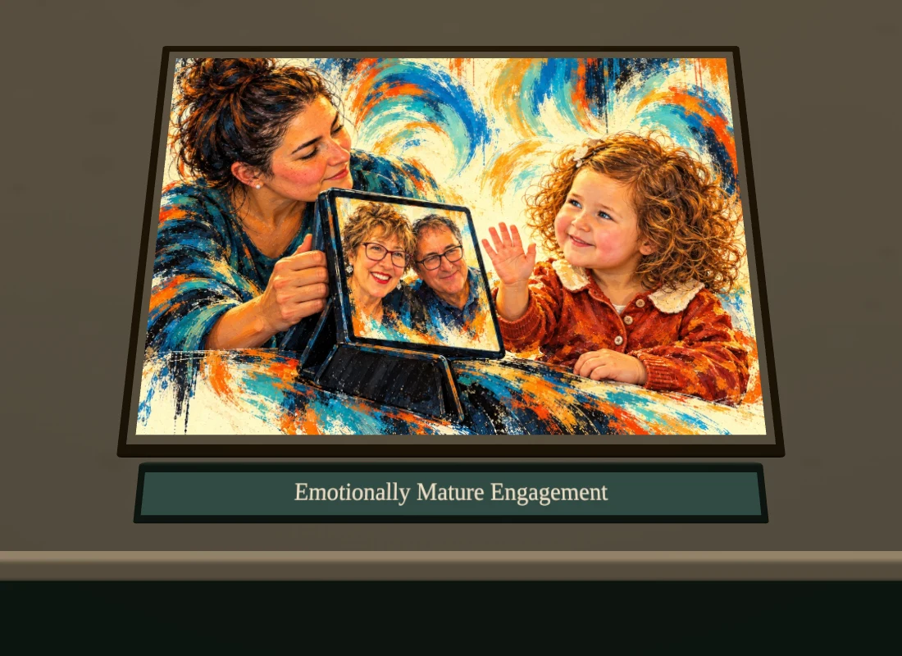
close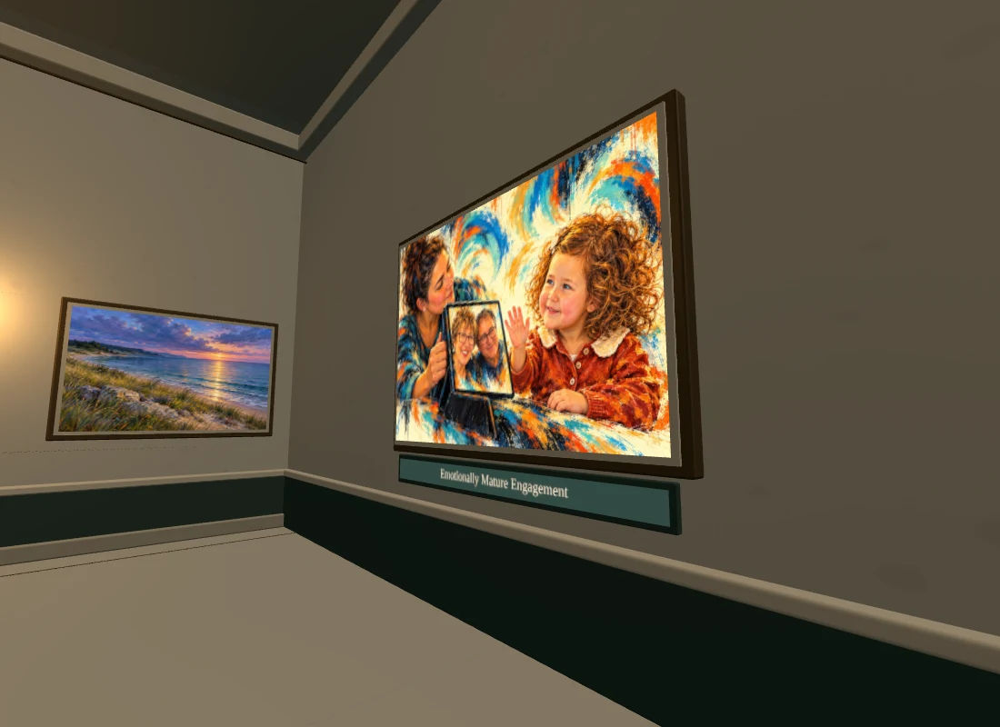
left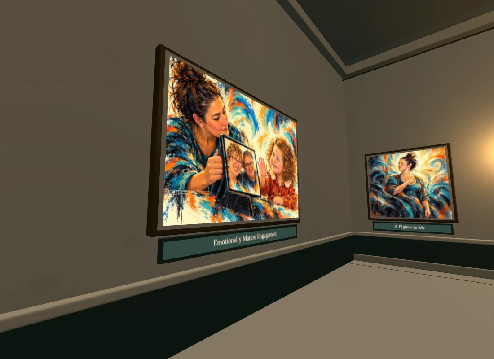
right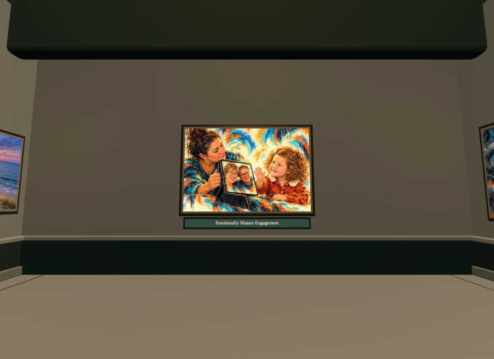
entrance context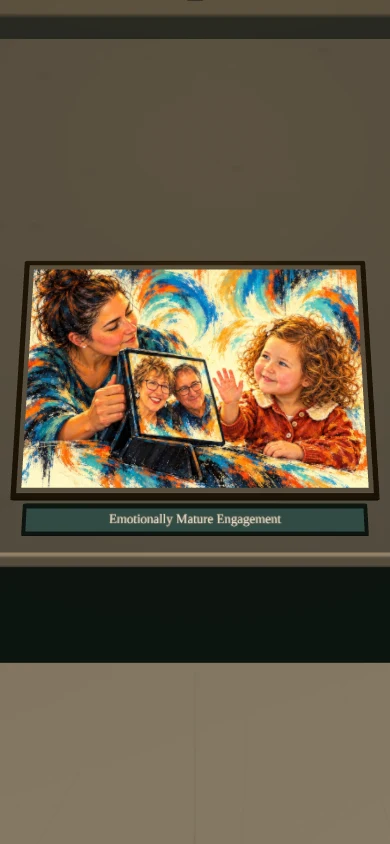
normal phone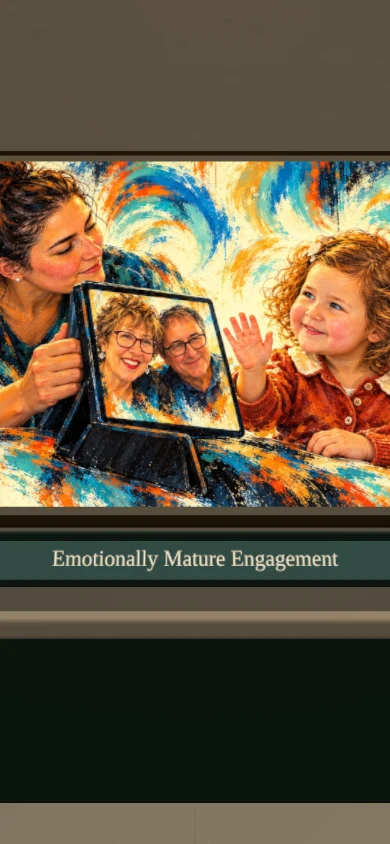
close phone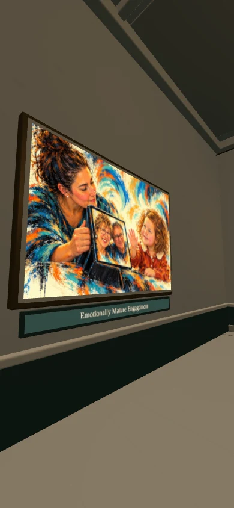
side phone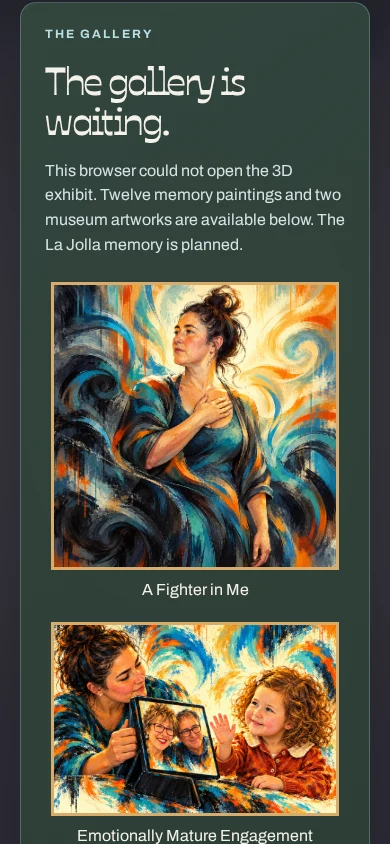
fallback phonePublished as 70de0e589df8c9f95933c0670f97f005151bcf55 in Pages run 40128422023. The normal live route, app, selected painting and Credits match the reviewed bytes. Fresh desktop and portrait production loads receive the artwork and exact accessible title without page errors or fallback. The complete local artwork inspection above used identical app and image bytes.
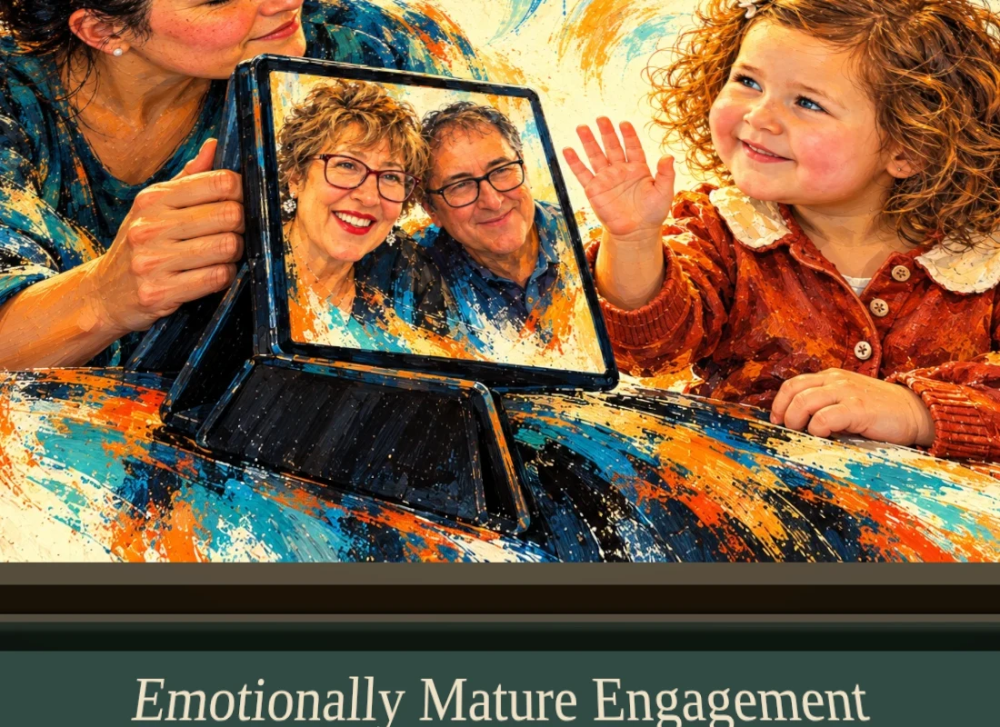
Fresh production desktop, close view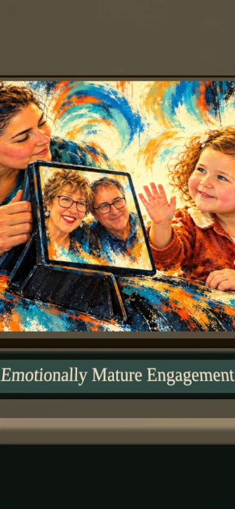
Fresh production portrait, close view